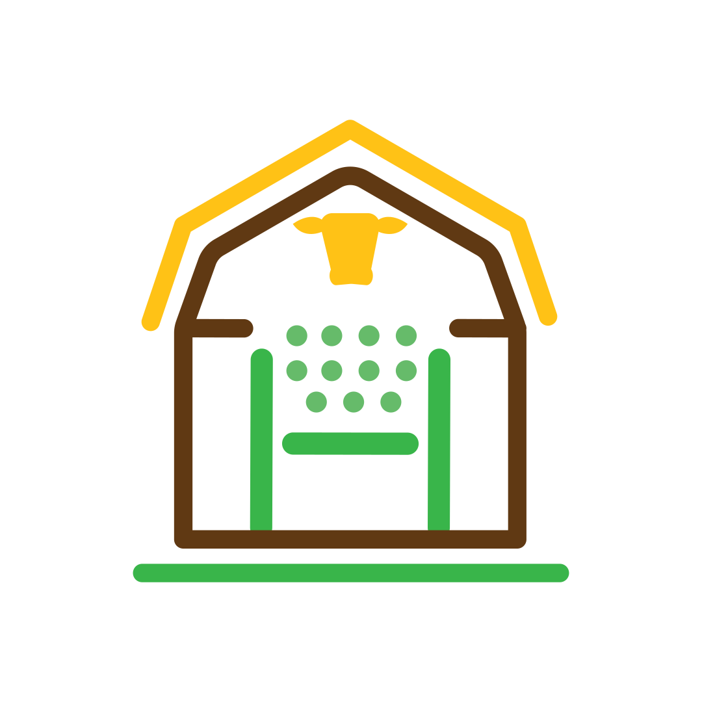
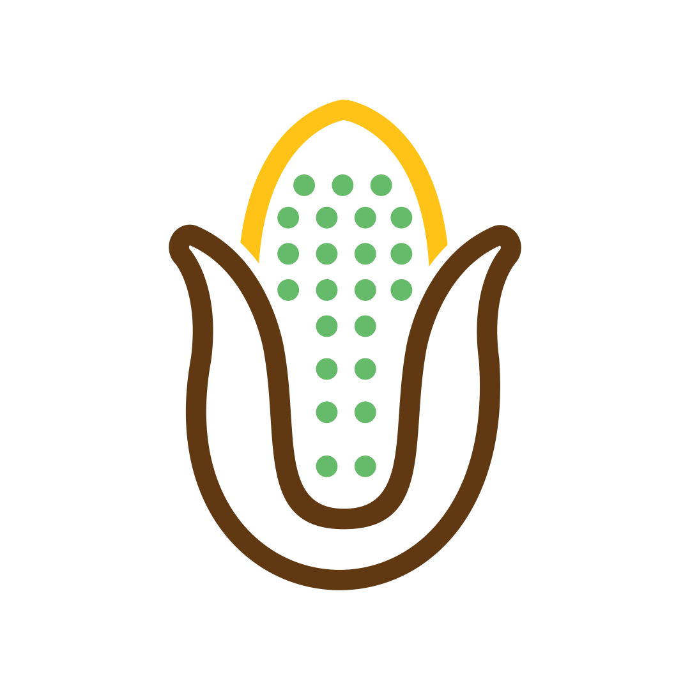
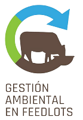
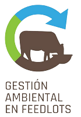

En Agropecuaria La Criolla ofrecemos un servicio de engorde de hacienda acorde a tus objetivos
VER MÁS
Crecimiento con excelencia

Siembrade prosperidad
Somos una empresa familiar con una fuerte pasión ganadera
Tenemos una larga y arraigada tradición familiar que se remonta a 1914. Estamos en la localidad de América, partido de Rivadavia, provincia de Buenos Aires, Argentina.
Durante más de un siglo, evolucionamos y nos hemos consolidado en el rubro de recría y engorde de hacienda tanto pastoril como a corral, de hacienda propia y brindando el servicio de engorde a terceros.
Nos enorgullece producir alimentos de manera eficiente, manteniendo altos estándares de bienestar animal y asumiendo una fuerte responsabilidad ambiental y social en cada paso que damos.
SERVICIOS

Área
Hotelería

LÍNEAS DE TRABAJO

Área
Agricultura

Poseemos producción propia de granos y contamos con certificaciones de sustentabilidad.
VER MÁSGESTIÓN AMBIENTAL INTEGRAL

De manera transversal, en todas nuestras producciones,
agregamos valor de forma sostenible y responsable
Huella de Carbono del establecimiento
VERRA + Carbon Group
Agricultura Certificada Sustentable (ASC)
AAPRESID + IRAM
Gestión Ambiental del Feedlot
INTA + CREA
Nosotros en números
5.000 Has
de campo propio
40%
campo propio con PASTURAS
3.000 Has
de campo alquilado
17.000 cab
Capacidad instantánea FEEDLOT
22.700 cab
rotadas/ última campaña
3 mill.
de kg de carne producidos última campaña
+130 mil
toneladas de COMPOST aplicado
16
lagunas impermeabilizadas para control de EFLUENTES
60
COLABORADORES directos
Sinergias

 
